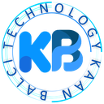

Die Idee teilen
Describe the goal, problem, timeline and contact information.

Kaan BalcıOpen for workProjektanfrage
Nutzen Sie das strukturierte Formular für AI-Workflows, Automatisierung, Websites, Dashboards, interaktive Produkte oder Softwareanfragen. Ich prüfe den Umfang und melde mich über den von Ihnen bevorzugten Kontaktweg.
So funktioniert es
Describe the goal, problem, timeline and contact information.
I check the technical direction, integration needs and possible next steps.
I respond using the contact method you selected.
Passend für
Das direkte Formular nutzt einen Google-Apps-Script-Endpunkt. Da der Browser im no-cors-Modus sendet, kann die Seite eine Referenz zur Übermittlung im Browser festhalten, aber keine serverseitige Zustellbestätigung wahrheitsgemäß behaupten.